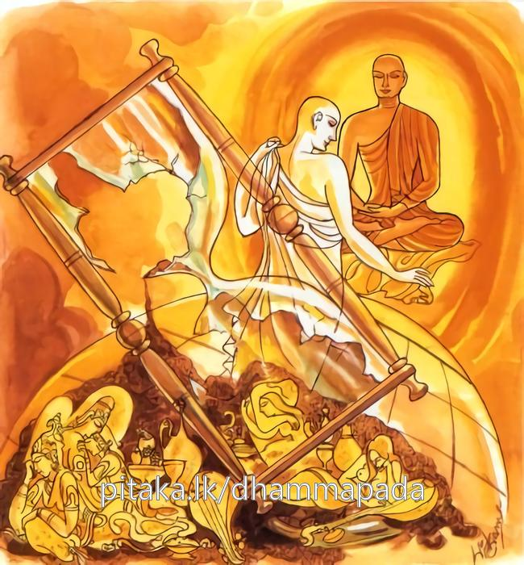

26-34 ජෝතිය තෙරුන්ගේ කථා පුවත
මෙම කතාව සද්ධර්ම සාගරයෙන් ද කියවන්න.
හිත්වා මානුසකං යොගං දිබ්බං යොගං උපච්චගා
සබ්බයොගවිසංයුත්තං තමහං බ්රූමි බ්රාහ්මණං.
මේ සත් ලොවැ මානුෂක ආයුෂ හා පඤ්චකාම ගුණය හැර පියා දිව්ය ආයුෂ හා පඤ්චකාම ගුණ ද යමෙක් ඉක්මැ යේ ද, (කාමාදි) යොගයන්ගෙන් වෙසෙසින් වෙන් වූ ඒ වීතරාග පුද්ගලයා බ්රාහ්මණ යැ යී මම් කියමි.

"යොධ තණහං” යන මේ ධර්ම දේශනය බුදුහු වේළුවනාරාමයේ වැඩසිටියදී ජෝතිය තෙරුන් පිළිබඳව දේශනා කළහ.
අජාසත් රජු දෙව්දත් තෙරුන් සමග එකට එකතුවී පියා ඝාතනය කර රාජ්යයේ පිහිටියේ ජෝතිය සිටුතුමාගේ ප්රාසාදය ගන්නෙමියි සංග්රාම සන්නධ වූයේ නික්මී මැණික් ප්රාකාරයේ පිරිවර සහිත තම ඡායාව දැක ගෘහපති මා යුද්ධ කිරිමට සුදානම් වී බලසෙනග ගෙන නික්මී යයි සළකා ළඟට යාමට නොහැකි විය. සිටුවරයාද එදින උපෝසථ සමාදන් වී අළුයම පැහැර ගෙන විහාරයට ගොස් බුදුන්ගෙන් බණ අසමින් සිටියේය. පළමුවර කොටුව ආරක්ෂාව ගෙන සිටි යමකෝලි යක්ෂයා ඔහු දැක කොහේ යන්නේදැයි පිරිවර සහිතව විනාශ කොට දිසා විනිසාවන්හි ලුහු බැන්දේය. රජු විහාරයටම ගියේය, අනතුරුව සිටුවරයා දැක දේවයනු කුමක්දැයි පවසා නැගිසිටියේය. ගෘහපතිය කිම ඔබ ඔබේ පුරුෂයන් මා හා යුද්ධ කිරීමට යොදා යුද්ධ කිරීමට අණකර මෙහි අවුත් බණ අසන ලෙස සිටියි. පැවසුවේය. එවිට සිටුවරයා ඇයි දේවයෙනි. මගේ ගෙය ගැනීමට ගියේද? ඔව් ගියෙමි. මම අකමැතිව මගේ ගෙය ගැනීමට රජවරු දහයකටවත් ගත නොහැකිය. එහිදී ඇය ඔබ රජුද? කියා විමසුවේය. රජතුමනි මා සන්තක නූල්පොටක් හෝ මගේ අකමැත්තෙන් රජවරුන් විසින් හෝ තෙරුන් විසින් හෝ ගැනීමට නොහැකිය. මම ඔබේ කැමැත්තෙන් ගන්නේ කුමක්දැයි විමසුවේය. හොඳයි දේවයති මේ ඇඟිලි දහසේ මුදු විස්සක් ඇත. මේවා ඔබට නොදෙමු හැකිනම් ඔබ ගන්නැයි පැවසුවේය. එහිදී රජු දණ ගසා උක්කුටුකයෙන් සිට පනින්නේනම් රියන් දහයක් උඩට නැගී සිටගෙන පනින්නේ නම් රියන් අසූවක් උඩට යන්නේය මෙබඳු බලසම්පන්න රජු එහෙ මෙහෙ පෙරළෙමින් එක මුදුවක්ද කඩාගැනීමට නොහැකි විය. අනතුරුව සිටුතුමා දේවයෙනි සළුව අතුරන්නැයි කියා ඇගිලි ඍජු ලෙසට තැබුවේය. මුදු විස්ස නික්මී වැටුනි. අනතුරුව සිටුවරයා දේවයෙන් මා සන්තක ද මගේ අකමැත්තෙන් ගත නොහැකියයි පවසා රජුගේ ක්රියාදාමයෙන් කළකිරුණ සිටුවරයා මට පැවිදිවීම අවසර දෙන්නැයි පැවසුවේය. ඔහු පැවිදි වූ විට සුබ ප්රාසාදය ගන්නෙමියි සිතා එක වචනයෙන්ම නුඹ පැවිදිවන්නෙයි පැවසුවේය. සිටුවරයා බුදුන් වෙත පැවිදි වී නොබෝ කලකින් රහත්බවට පත්විය. ජෝතික ථේර නමින් හැදින්වුනි. ඔහු රහත් බවට පත්වූ විගස සියලුම ඒ සම්පත් අතුරුදහන් විය. සතුලකාය නම් බිරිඳ ද දෙවියන් විසින් උතුරු කුරු දේශයට ගෙන ගියහ. පසුදිනෙක භික්ෂූන් ඔහු අමතා ඇවැත්නි ජෝතිය එම ප්රාසාදය හෝ ස්ත්රිය කෙරෙහි තෘෂ්ණාවක් ඇත්දැයි විමසුහ. ඇවැත්නි නැතැයි පැවසු විට ඒ පිළිබඳව බුදුන්ට දැනුම් දුන්හ. සිදුනොවූවක් කියන බව පැවසු විට ඒ පිළිබඳව මහණෙනි මගේ පුතුට ඒවා පිළිබඳ තණ්හාවක් නොමැති බව පැවසුහ. මෙලොව යමෙක් කාම තෘෂ්ණ බැහැර කොට ගිහිගෙයින් බැහැරව පැවිදිවේ ද කාමයන් හා භවයන් දුරුකළ ඔහු බ්රාහ්මණයයි මම පවසමි.
එහි අර්ථය යො ඉධ. ලෝකයෙහි ෂට්ද්වාරයන්හි තණ්හං. තෘෂ්ණාව හැර ගෘහවාසයේ අනර්ථ දැක අනගාරික වී භව තණ්හා කාම තණ්හා ආදිය බිද දමයි ද ඒ තැනැත්තා බ්රාහ්මණයෙකැයි මම කියමි.
මෙම ගාථාවේ අර්ථය, ජටිල ථෙර වස්තුවෙහි කියන ලද අයුරින් දත යුතුය.
දේශනාවසානයේ බොහෝ සෝවාන් ආදී මාර්ග ඵලවලට පැමිණියාහුය.